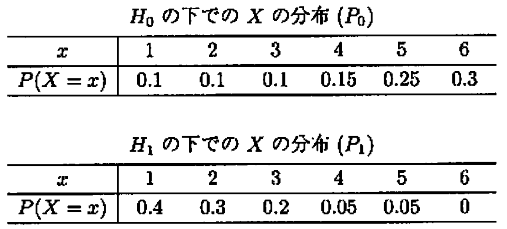
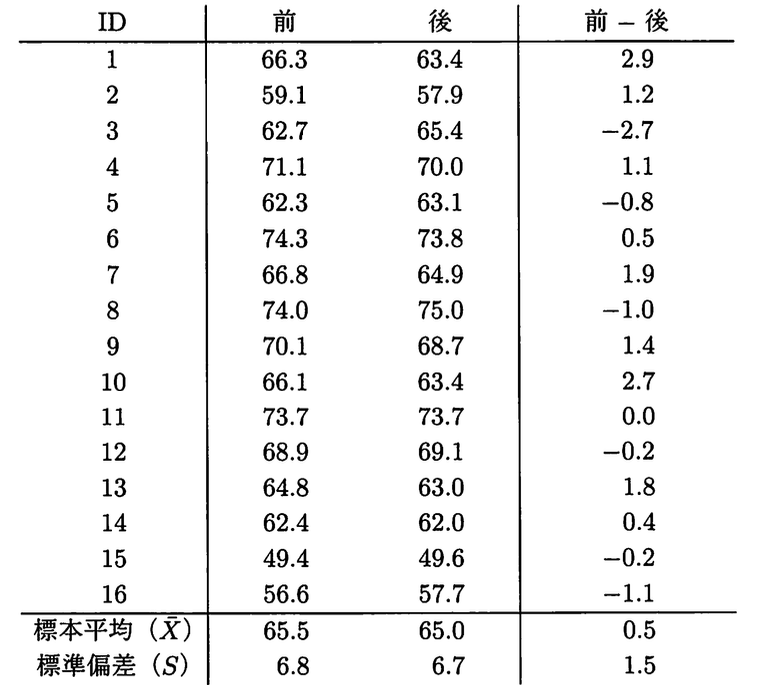
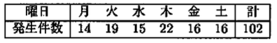
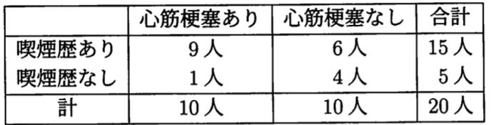

第3回演習：仮説検定
仮説検定の用語（過誤・検出力）、t検定、母比率の検定、カイ二乗検定を扱います。 問題の下にある「解答例」をクリックすると、解説と定期テストに向けたポイントが表示されます。
パート1：検定の基礎概念と過誤
問題1：第1種・第2種の過誤（2018年6月 問13）
離散型の確率変数 \(X\) の分布が，次の \(P_0\) または \(P_1\) のいずれかであるとする。 \(X\) の 1 回の観測に基づき，帰無仮説を \(H_0: X\) の分布は \(P_0\) である，対立仮説を \(H_1: X\) の分布は \(P_1\) である，として検定を考える。

{kind=link}
〔1〕 棄却域を \(X \le 3\) とする検定（検定 I とよぶことにする）に関する記述として，次の①〜⑤のうちから適切なものを一つ選べ。
- この検定の第一種の過誤の確率は 0.3 で，第二種の過誤の確率は 0.7 である。
- この検定の第一種の過誤の確率は 0.7 で，第二種の過誤の確率は 0.9 である。
- この検定の第一種の過誤の確率は 0.7 で，検出力は 0.1 である。
- この検定の第一種の過誤の確率は 0.3 で，検出力は 0.9 である。
- この検定の第一種の過誤の確率は 0.3 で，検出力は 0.1 である。
〔2〕 棄却域を \(X \le 2\) とする検定を検定 II とよび，棄却域を \(X=6\) とする検定を検定 III とよぶことにする。検定 I，検定 II，検定 III の比較に関する記述として，次の①〜⑤のうちから適切なものを一つ選べ。
- 検定 I と検定 III はともに有意水準 0.3 の検定であり，検定 III は検定 I よりも検出力が高い。
- 検定 I と検定 III はともに有意水準 0.3 の検定であり，検定 I は検定 III よりも検出力が高い。
- 検定 I と検定 II はともに有意水準 0.2 の検定であり，検定 II は検定 I よりも検出力が高い。
- 検定 I と検定 II はともに有意水準 0.2 の検定であり，検定 I は検定 II よりも検出力が高い。
- 検定 I，検定 II，検定 III の検出力は等しい。
解答例と解説
**正解：〔1〕 4, [2] 2 **
【解説】 【参考：検定の判断と誤りの分類】
| 真の状態 \ 判断 | 帰無仮説 \(H_0\) を棄却する | 帰無仮説 \(H_0\) を棄却しない（受容する） |
|---|---|---|
| 帰無仮説 \(H_0\) が正しい | 第1種の過誤 (\(\alpha\)) | 正しい判断 （確率 \(1-\alpha\)） |
| 帰無仮説 \(H_0\) が正しくない | 正しい判断 (検出力 \(1-\beta\)) | 第2種の過誤 (\(\beta\)) |
〔1〕
-
第1種の過誤（\(\alpha\)）：帰無仮説 \(H_0\) が正しいのに、誤って棄却してしまう確率。
- \(H_0\)（分布 \(P_0\)）が正しいとき、棄却域 \(X \le 3\)（\(X=1, 2, 3\)）に入る確率は、 $$ P_0(1) + P_0(2) + P_0(3) = 0.1 + 0.1 + 0.1 = 0.3 $$ よって、第1種の過誤確率は 0.3 です。
-
第2種の過誤（\(\beta\)）：帰無仮説\(H_0\)が正しくないのに、誤って\(H_0\)を受容してしまう確率。つまり、\(H_1\)の元で\(X>3\)となる確率。
- 検出力（\(1 - \beta\)）：帰無仮説\(H_0\)が正しくないときに、正しく棄却する確率。 $$ \beta = P_1(4) + P_1(5) + P_1(6) = 0.05 + 0.05 + 0.05 = 0.1 $$ よって、検出力は $$ 1-\beta = 0.9 $$
したがって、正解は ④ です。
〔2〕 各検定の有意水準（第1種の過誤確率 \(\alpha\)）と検出力（\(1-\beta\)）を計算します。
- 検定 I (\(X \le 3\))： \(\alpha = 0.3\), 検出力 \(= 0.9\) （〔1〕より）
- 検定 II (\(X \le 2\))：
- \(\alpha = P_0(1) + P_0(2) = 0.1 + 0.1 = 0.2\)
- 検出力 \(= P_1(1) + P_1(2) = 0.4 + 0.3 = 0.7\)
- 検定 III (\(X = 6\))：
- \(\alpha = P_0(6) = 0.3\)
- 検出力 \(= P_1(6) = 0\)
選択肢を検討します。
- 1, 2について：検定 I と検定 III はともに \(\alpha = 0.3\) で有意水準は同じです。検出力は I が 0.9、III が 0 なので、I の方が高いです。よって ② が正解です。
パート2：t検定
問題2：t検定（2018年11月 問13）
ある農家では，じゃがいもの生産を行っている。この農家において収穫されたじゃがいもを無作為に 20 個抽出したところ，重量 (g) の標本平均は 85.6，不偏分散は 121.9 であった。 次の文章は，じゃがいもの重量についての検定に関するものである。
じゃがいもの重量は正規分布に従うと仮定して，じゃがいもの重量の母平均を \(\mu\)，母分散を \(\sigma^2\) とする。帰無仮説を \(\mu = 90\)，対立仮説を \(\mu \ne 90\) として，有意水準を 5% とする母平均の両側検定を行う。検定統計量を \(t\) とすると， \(t\) の計算式は (ア) である。また，棄却域は (イ) である。したがって，帰無仮説を (ウ)。
文中の (ア)，(イ)，(ウ) にあてはまるものの組合せとして，次の①〜⑤のうちから適切なものを一つ選べ。
- (ア) \(t = \frac{85.6 - 90}{\sqrt{121.9}}\) (イ) \(|t| > 1.729\) (ウ) 棄却しない
- (ア) \(t = \frac{85.6 - 90}{\sqrt{121.9}}\) (イ) \(|t| > 2.093\) (ウ) 棄却しない
- (ア) \(t = \frac{85.6 - 90}{\sqrt{121.9/20}}\) (イ) \(|t| > 2.086\) (ウ) 棄却しない
- (ア) \(t = \frac{85.6 - 90}{\sqrt{121.9/20}}\) (イ) \(|t| > 2.093\) (ウ) 棄却しない
- (ア) \(t = \frac{85.6 - 90}{\sqrt{121.9/20}}\) (イ) \(|t| > 1.725\) (ウ) 棄却する
解答例と解説
正解：4
【解説】
(ア) 検定統計量の計算式 母分散が未知の場合の母平均の検定には \(t\) 統計量を用います。 式は \(t = \frac{\bar{X} - \mu_0}{\sqrt{S^2/n}}\) です。 ここで、\(\bar{X} = 85.6, \mu_0 = 90, S^2 = 121.9, n = 20\) なので、 $$ t = \frac{85.6 - 90}{\sqrt{121.9/20}} $$ となります。
(イ) 棄却域の設定 自由度 \(\nu = n - 1 = 20 - 1 = 19\) の \(t\) 分布に従います。 \(t\) 分布表より、自由度 19 の上側 2.5% 点（両側検定）は \(2.093\) です。 よって棄却域は \(|t| > 2.093\) となります。これで選択肢は ④ に確定します。 （※2.086 は自由度 20 の値、1.729 は自由度 19 の上側 5% 点（片側検定用）です）
(ウ) 判定 実際に \(t\) 値を計算してみます。 $$ t = \frac{-4.4}{\sqrt{6.095}} \approx \frac{-4.4}{2.469} \approx -1.782 $$ 絶対値をとると \(|t| \approx 1.782\) です。 これは棄却限界値 \(2.093\) よりも小さいため、棄却域に入りません。 したがって、「帰無仮説を棄却しない（有意差なし）」という結論になります。
よって、正解は ④ です。
【ポイント】
- 検定の手順：①仮説を立てる \(\to\) ②統計量を計算する \(\to\) ③棄却域と比較する \(\to\) ④結論を出す。
- 自由度の確認：単一サンプルのt検定では、自由度は必ず \(n-1\) です。表を読み間違えないように注意しましょう。
問題3：対応のあるt検定（2019年11月 問16）
母平均 \(\mu\), 母分散 \(\sigma^2\) の正規分布を母集団分布とする母集団から大きさ 16 の無作為標本 \(X_1, \dots, X_{16}\) を抽出する。ここで
とおくとき，統計量
は自由度 (ア) の (イ) 分布に従う。ここでは，統計量 \(T\) を用いて仮説検定を行うことを考える。
今，あるダイエット食品 A の摂取後に体重が減少するかどうかを検証するために，ある母集団から無作為に抽出した 40 代男性 16 人に対して 1 か月間この食品 A を毎日摂取してもらった。次の表は，摂取する前の体重（列のラベルが “前”）と摂取して 1 か月経った後の体重（列のラベルが “後”）のデータ（単位：kg）である。また “前 - 後” のラベルにおけるデータは，それぞれの行に対して “前” に対応する体重から “後” の体重を引いた値である。

{kind=link}
〔1〕 文中の (ア)，(イ) の組合せとして，次の①〜⑤から適切なものを一つ選べ。
- (ア) 17 (イ) \(t\)
- (ア) 16 (イ) カイ二乗
- (ア) 16 (イ) \(t\)
- (ア) 15 (イ) カイ二乗
- (ア) 15 (イ) \(t\)
〔2〕 食品 A の摂取後に体重が減少するかどうかを検証するために，有意水準 5% の仮説検定を行う。このとき，帰無仮説と対立仮説の設定として，次の①〜⑤から適切なものを一つ選べ。ただし，“前 - 後” のデータに対応する母集団の母平均を \(\mu\) とする。
- 帰無仮説を \(H_0: \mu < 0\)，対立仮説を \(H_1: \mu = 0\) とする。
- 帰無仮説を \(H_0: \mu > 0\)，対立仮説を \(H_1: \mu = 0\) とする。
- 帰無仮説を \(H_0: \mu < 0\)，対立仮説を \(H_1: \mu > 0\) とする。
- 帰無仮説を \(H_0: \mu = 0\)，対立仮説を \(H_1: \mu > 0\) とする。
- 帰無仮説を \(H_0: \mu = 0\)，対立仮説を \(H_1: \mu < 0\) とする。
〔3〕 食品 A の摂取後に体重が減少するかどうかを検証するために，検定を行った際の解釈として，次の①〜⑤のうちから最も適切なものを一つ選べ。ただし，“前 - 後” のデータに対応する母集団分布は正規分布 \(N(\mu, \sigma^2)\) とし，\(\mu, \sigma^2\) はともに未知の母数とする。また \(t\) は，統計量 \(T\) において \(\mu=0\) としたものの実現値とする。
- \(|t| > 2.131\) となるため，帰無仮説は棄却される。よって，食品 A の摂取後には体重が減少する傾向にあると判断する。
- \(t < 1.746\) となるため，帰無仮説は棄却される。よって，食品 A の摂取後で体重変化はないと判断する。
- \(|t| < 2.131\) となるため，帰無仮説は棄却されない。よって，食品 A の摂取後には体重が減少するとは判断できない。
- \(t < 1.753\) となるため，帰無仮説は棄却されない。よって，食品 A の摂取後で体重変化はないと判断する。
- \(t < 1.753\) となるため，帰無仮説は棄却されない。よって，食品 A の摂取後には体重が減少するとは判断できない。
解答例と解説
正解：〔1〕 5, 〔2〕 4, 〔3〕 5
【解説】
対応のあるt検定においては、時点ごとのデータを2つの独立した群のデータと考えてはならない。 そこで、前後（問題ではダイエット前後）の比較するため"差"を計算し、1標本t検定を実施する。
〔1〕t分布の自由度
母分散が未知の場合、正規母集団からの標本平均を不偏分散で標準化した統計量 \(T\) は、\(t\) 分布に従います。 自由度は、標本サイズ \(n=16\) から 1 を引いた値になります。 自由度 \(= 16 - 1 = 15\)。 よって、自由度 15 の \(t\) 分布に従います。正解は ⑤ です。
〔2〕仮説の設定
- データの定義：問題文より、変数は「前 - 後」の差として定義されています。
- 体重が減少した場合： (前) \(>\) (後) なので、差は プラス になります。
- 帰無仮説 \(H_0\)：「変化がない（効果がない）」。通常は等号を含めて \(\mu = 0\) とします。 \(\Rightarrow H_0: \mu = 0\)
- 対立仮説 \(H_1\)：「体重が減少する」、つまり「差の平均 \(\mu\) が正である」こと。 \(\Rightarrow H_1: \mu > 0\)
したがって、正解は ④ です。
〔3〕検定の実施と結論
- 検定統計量の計算： 表の値より、標本平均 \(\bar{X} = 0.5\)、標準偏差 \(S = 1.5\)、サンプルサイズ \(n = 16\)。 $$ t = \frac{\bar{X} - 0}{S/\sqrt{n}} = \frac{0.5}{1.5/\sqrt{16}} = \frac{0.5}{1.5/4} = \frac{0.5}{0.375} = \frac{2.0}{1.5} \approx 1.333 $$
- 棄却域の設定： 対立仮説が \(\mu > 0\) なので、片側検定（上側）を行います。 有意水準 5%、自由度 15 の \(t\) 分布の上側 5% 点は \(t_{0.05}(15) = 1.753\) です（選択肢の数値から読み取れます）。 棄却域は \(t > 1.753\) です。
- 判定： 計算した \(t \approx 1.33\) は \(1.753\) より小さい (\(1.33 < 1.753\)) ため、棄却域に入りません。 したがって、帰無仮説は棄却されません。 これは、「統計的に有意な体重減少は見られなかった（減少するとは判断できない）」ことを意味します。
選択肢を検討します。
- 1, 3：\(2.131\) は両側検定（2.5%点）の値であり、今回は片側検定なので不適切です。
- 2：不等号の向きや結論が矛盾しています。
- 4：「体重変化はないと判断する」は帰無仮説を積極的に採択する表現であり、検定の結論としては不適切です（「差があるとは言えない」までしか言えません）。
- 5：「帰無仮説は棄却されない」「体重が減少するとは判断できない」としており、適切です。
よって正解は ⑤ です。
【ポイント】
- 対応のあるt検定：同一対象の「前後」の比較は、差をとって「差の平均が0かどうか」の1標本t検定に帰着させます。
- 片側検定の符号：「減った」ことを言いたい場合、差を「前-後」でとるか「後-前」でとるかで、対立仮説が \(>0\) か \(<0\) か変わる点に注意してください。
- 検定の結論：棄却されなかった場合、「差がないと証明された」わけではなく、「差があるとは言えない（証拠不十分）」という解釈になります。---
パート3：母比率の検定
問題4：母比率の検定（2018年11月 問15）
ある工場の担当者が，A 社と B 社のいずれかのメーカーからある部品の製作機械を仕入れることにした。不良品率の小さい機械を仕入れたいので，それぞれの製品の不良品率を電話で尋ねたところ，A 社も B 社も 5%，という回答であった。これらの回答が正しいかどうかを確認するため，それぞれの機械で 200 個の部品を試作してもらい，実際に不良品率を検査することにした。A 社の機械による 200 個の試作品に混入する不良品の個数を \(X\) として，以下の問いに答えよ。
〔1〕 A 社の回答が正しいと仮定したとき，確率変数 \(X\) が従う分布および，その期待値と分散の組合せとして，次の①〜⑤のうちから最も適切なものを一つ選べ。
- 分布：ポアソン分布， 平均：9.5， 分散：9.5
- 分布：ポアソン分布， 平均：10.0，分散：10.0
- 分布：二項分布， 平均：10.0，分散：9.5
- 分布：二項分布， 平均：10.0，分散：10.0
- 分布：幾何分布， 平均：10.0，分散：10.0
〔2〕 A 社の試作品 200 個のうち実際に不良品は 16 個あった。不良品率を \(r\) として，帰無仮説を \(r=0.05\)，対立仮説を \(r > 0.05\) として検定を行う。連続修正を行わない場合の \(P\)-値として，次の①〜⑤のうちから最も適切なものを一つ選べ。
- 0.001
- 0.026
- 0.13
- 0.26
- 0.52
〔3〕 A 社に加えて，B 社の試作品 200 個も調べてみると，不良品は 17 個あった。A，B 両社の不良品率の差を \(d\) として，帰無仮説を \(d=0\)，対立仮説を \(d \ne 0\) として検定を行う。このときの連続修正を行わない場合の \(P\)-値として，次の①〜⑤のうちから最も適切なものを一つ選べ。
- 0.05
- 0.20
- 0.45
- 0.64
- 0.86
解答例と解説
正解：〔1〕 3, 〔2〕 2, 〔3〕 5
【解説】
〔1〕確率分布の特定
- 分布：不良品か良品かの2択（ベルヌーイ試行）を独立に \(n=200\) 回繰り返すので、確率変数\(X\)は、試行回数\(n\), 生起確率\(p\)とすると二項分布\(B(n, p)\)に従います。
\(p=0.05\)を正しいと仮定したときの期待値と分散は、
- 期待値：\(E[X] = np = 200 \times 0.05 = 10.0\)。
- 分散：\(V[X] = np(1-p) = 200 \times 0.05 \times 0.95 = 10.0 \times 0.95 = 9.5\)。
よって正解は ③ です。 （※ポアソン分布で近似する場合、期待値＝分散＝\(\lambda=10.0\) となりますが、ここでは二項分布が選択肢にあるため、より厳密な方を選びます）
〔2〕1標本の母比率の検定
- サンプルサイズ (\(n\)): \(n = 200\) （試作した部品の総数）
- 観測データ (\(X\)): \(X = 16\) （実際に混入していた不良品の個数）
-
標本比率 (\(\hat{r}\)): 実際の不良品率です。以下のように計算します。 $$ \hat{r} = \frac{X}{n} = \frac{16}{200} = 0.08 $$
-
帰無仮説 (\(H_0\)): 「A社の主張通り、不良品率は5%である」 $$ H_0: r = 0.05 $$
- 対立仮説 (\(H_1\)): 「不良品率は5%より高い（悪い）」 $$ H_1: r > 0.05 $$
本来、個数 \(X\) は二項分布に従いますが、サンプルサイズ \(n\) が十分に大きい場合、標本比率 \(\hat{r}\) の分布は 正規分布 で近似できることが知られています（中心極限定理）。
- 平均: \(r = 0.05\)
- 標本比率の分散: \(V[X/n] = \frac{1}{n^2}V[X] = \frac{1}{n^2}nr(1-r) = \frac{r(1 - r)}{n}\)
- 標本比率の標準偏差（標準誤差）: \(\sqrt{\frac{r(1 - r)}{n}}\)
したがって、これを標準化（平均0、分散1に変換）した統計量 \(Z\) は標準正規分布に従う。
数値を代入して \(Z\) 値を求めます。
-
** P値の導出と結論** 求めた \(Z=1.95\) が、標準正規分布のどの位置にあるかを確認し、それより右側（上側）の面積（確率 \(P\)）を求めます。
-
標準正規分布表（Z分布表）を見ると、よく使われる値として \(Z=1.96\) のときの上側確率は \(0.025\) (\(2.5\%\)) です。
- 今回の \(Z=1.95\) は \(1.96\) に非常に近い値です。
- したがって、求める確率（P値）も \(0.025\) に非常に近い値になります。
選択肢の中で \(0.025\) に最も近い値を探すと、 ② 0.026 が該当します。
よって正解は ② です。
〔3〕2標本の比率の差の検定
- A社：\(n_1=200, x_1=16, \hat{p}_1=0.08\)
- B社：\(n_2=200, x_2=17, \hat{p}_2=0.085\)
差の分布について
2つの独立な標本から得られた標本比率 \(\hat{p}_1\), \(\hat{p}_2\) について、それぞれが正規近似できるとき：
独立な正規分布の差もまた正規分布に従うため、
帰無仮説 \(H_0: d = p_1-p_2 = 0 \iff p_1 = p_2 = p\)（共通の母比率）の下では、
となる。この共通の母比率 \(p\) は未知なので、プールした比率 \(\hat{p}\) で推定する。
-
帰無仮説 \(H_0\)（差がない）の下でのプールした比率 \(\hat{p}\)： $$ \hat{p} = \frac{x_1 + x_2}{n_1 + n_2} = \frac{16+17}{400} = \frac{33}{400} = 0.0825 $$
-
検定統計量 \(Z\) は帰無仮説 \(H_0\) の下で標準正規分布に従う： $$ Z = \frac{(\hat{p}_1 - \hat{p}_2) - 0}{\sqrt{\hat{p}(1-\hat{p})\left(\frac{1}{n_1} + \frac{1}{n_2}\right)}} = \frac{0.08 - 0.085}{\sqrt{0.0825 \times 0.9175 \times \frac{2}{200}}} $$ $$ \text{分母} = \sqrt{0.0757 \times 0.01} = \sqrt{0.000757} \approx 0.0275 $$ $$ Z = \frac{-0.005}{0.0275} \approx -0.18 $$
-
対立仮説が \(H_1: p_1 \ne p_2\) なので両側検定です。
- \(P(|Z| > 0.18) = 2 \times P(Z > 0.18)\)
- 標準正規分布表より \(P(Z > 0.18) \approx 0.4286\)
-
P値は \(2 \times 0.43 \approx 0.86\)
-
よって正解は ⑤ です。
【ポイント】
- 二項分布の分散：\(np(1-p)\) です。ポアソン分布（分散=\(\lambda\)）と混同しないようにしましょう。
- 比率の差の検定：帰無仮説が \(p_1=p_2\) の場合、共通の比率（プールした比率）を使って標準誤差を計算します。
パート4：カイ二乗検定
問題5：適合度検定（2018年11月 問16）
次の表は，ある警察署管轄区内における（日曜日を除く）曜日別の交通事故発生件数である。

{kind=link}
この警察署管轄区内での交通事故発生率について，「発生率は曜日に依存しない」を帰無仮説として有意水準 5% の適合度検定を行う。
〔1〕 この適合度検定における \(\chi^2\) 統計量の計算式として，次の①〜⑤のうちから適切なものを一つ選べ。
- \(\chi^2 = \frac{(14-17)^2 + (19-17)^2 + (15-17)^2 + (22-17)^2 + 2 \times (16-17)^2}{17}\)
- \(\chi^2 = \frac{(14-17)^2 + (19-17)^2 + (15-17)^2 + (22-17)^2 + 2 \times (16-17)^2}{17^2}\)
- \(\chi^2 = \frac{14^2 + 19^2 + 15^2 + 22^2 + 2 \times 16^2 - 6 \times 17}{17}\)
- \(\chi^2 = \frac{14^2 + 19^2 + 15^2 + 22^2 + 2 \times 16^2}{17^2}\)
- \(\chi^2 = \frac{14^2 + 19^2 + 15^2 + 22^2 + 2 \times 16^2 - 6 \times 17}{102}\)
〔2〕 次の文章は，上記の \(\chi^2\) 統計量に基づく有意水準 5% の適合度検定に関するものである。
\(\chi^2\) 統計量は帰無仮説の下で近似的に (ア) に従う。したがって，有意水準 5% で帰無仮説を (イ)。
文中の (ア)，(イ) にあてはまるものの組合せとして，次の①〜⑤のうちから適切なものを一つ選べ。ただし，設問〔1〕の選択肢①〜⑤の値は，それぞれ約 2.59, 0.15, 98.59, 6.15, 16.43 であることを用いてよい。
- (ア) 自由度 1 の \(\chi^2\) 分布 (イ) 棄却しない
- (ア) 自由度 5 の \(\chi^2\) 分布 (イ) 棄却する
- (ア) 自由度 5 の \(\chi^2\) 分布 (イ) 棄却しない
- (ア) 自由度 6 の \(\chi^2\) 分布 (イ) 棄却する
- (ア) 自由度 6 の \(\chi^2\) 分布 (イ) 棄却しない
解答例と解説
正解：〔1〕 1, 〔2〕 3
【解説】
〔1〕統計量の計算
- 合計件数：\(14+19+15+22+16+16 = 102\)件。
- カテゴリー数：月〜土の6つ。
- 帰無仮説（一様分布）の下での期待度数 \(E\)：\(102 / 6 = 17\)。
- カイ二乗統計量の定義：\(\chi^2 = \sum \frac{(O-E)^2}{E}\) ただし、\(O\)は観測度数、\(E\)は期待度数。
- 式： $$ \chi^2 = \frac{(14-17)^2 + (19-17)^2 + (15-17)^2 + (22-17)^2 + (16-17)^2 + (16-17)^2}{17} \approx 2.59$$ 最後の2項（金・土）は同じなので \(2 \times (16-17)^2\) とまとめられます。 これは選択肢 ① と一致します。
〔2〕自由度と判定
- (ア) 自由度：適合度検定の自由度は「カテゴリー数 - 1」です。\(6 - 1 = 5\)。
- (イ) 判定：
- 統計量の値：設問〔1〕の正解①の値は約 2.59 と与えられています。
- 棄却限界値：自由度5のカイ二乗分布の上側5%点は 11.07 です。
- \(2.59 < 11.07\) なので棄却域に入りません。結論は「棄却しない」。
よって正解は ③ です。
【ポイント】
- カイ二乗検定：式 \(\sum (O-E)^2/E\) と、自由度（カテゴリー数-1）を確実に覚えましょう。
問題6：独立性の検定（2021年6月 問19）
ある医療施設で，心筋梗塞の患者 10 人全員と，心筋梗塞ではない患者の中からランダムに選択された患者 10 人について，過去の喫煙歴を調査したところ次の分割表の結果を得た。

{kind=link}
次の文章は，喫煙歴と心筋梗塞のありなしが独立であるか否かを調べるための検定に関するものである。
帰無仮説は「行と列の要因は独立である」，対立仮説は「行と列の要因は独立でない」である。このデータに対するピアソンのカイ二乗統計量の実現値は (ア) である。ピアソンのカイ二乗統計量は帰無仮説の下で近似的に自由度 (イ) のカイ 2 乗分布に従うので，P-値は (ウ) である。
文中の (ア) 〜 (ウ) に当てはまる数値の組合せとして，次の①〜⑤のうちから最も適切なものを一つ選べ。
- (ア) 2.40 (イ) 3 (ウ) 0.494
- (ア) 2.40 (イ) 1 (ウ) 0.182
- (ア) 2.40 (イ) 1 (ウ) 0.121
- (ア) 1.55 (イ) 3 (ウ) 0.671
- (ア) 1.55 (イ) 1 (ウ) 0.213
解答例と解説
正解：3
【解説】
(ア) 統計量の計算
- 実測値 \(O\)：
-
あり なし 計 喫煙あり 9 6 15 喫煙なし 1 4 5 計 10 10 20 -
期待度数 \(E\)：\(\frac{\text{行和} \times \text{列和}}{\text{総和}}\)
- (あり, あり): \(15 \times 10 / 20 = 7.5\)
- (あり, なし): \(15 \times 10 / 20 = 7.5\)
- (なし, あり): \(5 \times 10 / 20 = 2.5\)
- (なし, なし): \(5 \times 10 / 20 = 2.5\)
あり なし 計 喫煙あり \(15 \times 10 / 20 = 7.5\) \(15 \times 10 / 20 = 7.5\) 15 喫煙なし \(5 \times 10 / 20 = 2.5\) \(5 \times 10 / 20 = 2.5\) 5 計 10 10 20 -
\(\chi^2\) 統計量： $$ \chi^2 = \frac{(9-7.5)^2}{7.5} + \frac{(6-7.5)^2}{7.5} + \frac{(1-2.5)^2}{2.5} + \frac{(4-2.5)^2}{2.5} $$ $$ = \frac{2.25}{7.5} \times 2 + \frac{2.25}{2.5} \times 2 = 0.3 \times 2 + 0.9 \times 2 = 0.6 + 1.8 = 2.40 $$
(イ) 自由度
\(2 \times 2\) 分割表なので、\((2-1) \times (2-1) = 1\)。
(ウ) P値の導出
自由度 1 のカイ二乗分布に従う統計量 \(\chi^2\) は、標準正規分布に従う確率変数 \(Z\) の2乗 (\(Z^2\)) と同じ分布に従います。 したがって、\(\chi^2 = 2.40\) より大きい値をとる確率（P値）は、標準正規分布において \(Z^2 > 2.40\)、すなわち \(|Z| > \sqrt{2.40}\) となる確率と等しくなります。
- まず \(\sqrt{2.40}\) を計算します。 \(\sqrt{2.40} \approx 1.549\)
- 標準正規分布表を用いて、\(|Z| > 1.55\) となる確率を求めます。 表より、上側確率 \(P(Z > 1.55) = 0.0606\) です。
- 両側（\(Z > 1.55\) または \(Z < -1.55\)）の確率を合わせます。 \(P(|Z| > 1.55) = 2 \times 0.0606 = 0.1212\)
計算された P値 \(0.1212\) に最も近い選択肢は 0.121 です。 よって正解は ③ です。
【ポイント】
- 独立性の検定：期待度数の計算方法をマスターしましょう。自由度は \((R-1)(C-1)\) です。